Wishlist Status / Spin Status
Shows who has saved a wishlist, or who has spun. It does not show anyone else's gift ideas.
Ipinapakita kung sino ang nakapag-save o nakapag-spin na. Hindi nito ipinapakita ang mga gift idea ng iba.
A simple family guide · Simpleng gabay para sa pamilya
English: Open the website link shared by the family organizer. Please use your own name and keep your result secret.
Tagalog: Buksan ang website link na ipinadala ng family organizer. Sarili mong pangalan ang piliin at ilihim ang resulta mo.
Demo screenshots only: Jhury is shown as an example member. PIN 7391, gift ideas, and the sample recipient are fictional. This is not a real account login or draw. Do not use the example PIN.
Halimbawa lamang ang mga screenshot: Ginamit si Jhury bilang halimbawa. Gawa-gawa ang PIN na 7391, mga ideya ng regalo, at sample na tatanggap. Hindi ito totoong pag-login o bunutan. Huwag gamitin ang halimbawang PIN.
To make a PDF: press “Print / Save as PDF”, then choose “Save as PDF” in the print window. On a phone, choose “Share” or “Print” and then “Save as PDF,” if available.
Para gumawa ng PDF: pindutin ang “Print / Save as PDF,” at piliin ang “Save as PDF” sa print window. Sa cellphone, piliin ang “Share” o “Print,” saka “Save as PDF,” kung mayroon.
Tap Enter, choose your own family name, and enter your 4-digit PIN. First time? Create a new 4-digit PIN and remember it.
Pindutin ang Enter, piliin ang sarili mong pangalan, at ilagay ang 4-digit PIN. Unang gamit? Gumawa ng bagong 4-digit PIN at tandaan ito.
Write at least 3 gift ideas, then tap Save my wishlist. Photos are optional.
Maglagay ng hindi bababa sa 3 gustong regalo, saka pindutin ang Save my wishlist. Hindi kailangang maglagay ng litrato.
Wait until every family member has saved a wishlist. Then review your list, tap Continue to the wheel, and tap SPIN once.
Hintaying makapag-save ng wishlist ang lahat. Suriin ang sarili mong listahan, pindutin ang Continue to the wheel, at pindutin nang isang beses ang SPIN.
The result shows who you will give a gift to and their wishlist. Keep it secret until the party.
Makikita sa resulta kung kanino ka magbibigay ng regalo at ang kanyang wishlist. Huwag sabihin ang resulta hanggang sa party.
Open the website. Tap Enter. The website connects to the family's shared list. If it says “Connecting,” wait a moment. If it says “Offline” or “Error,” check the internet and tap Retry.
Buksan ang website. Pindutin ang Enter. Kumokonekta ito sa pinagsasaluhang listahan ng pamilya. Kung “Connecting” ang nakasulat, maghintay sandali. Kung “Offline” o “Error,” tingnan ang internet at pindutin ang Retry.
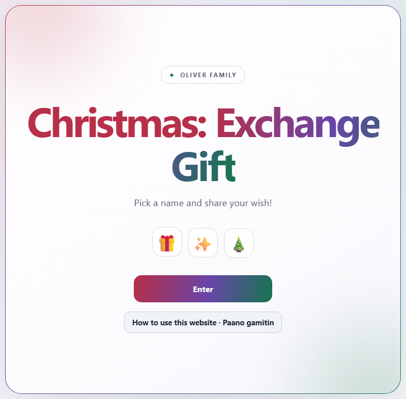
Choose your own name. Do not choose another person's name. The first person to set a PIN claims that name. If your name already has a PIN, use the same one as before.
Sarili mong pangalan ang piliin. Huwag piliin ang pangalan ng iba. Ang unang magtakda ng PIN ang magkakaroon ng access sa pangalang iyon. Kung may PIN ka na, gamitin ang dati mong PIN.
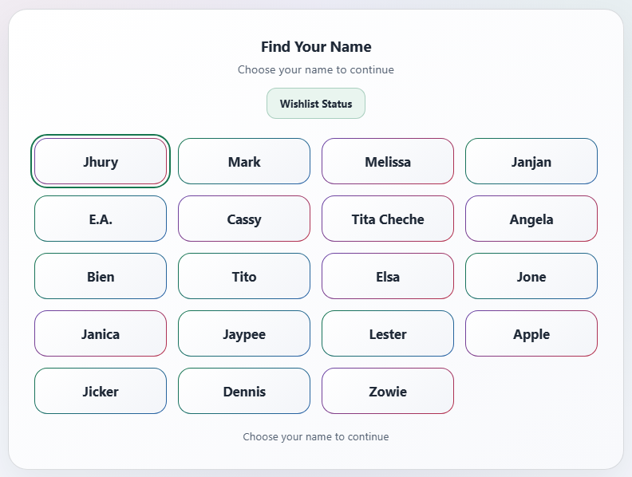
First-time PIN setup. Enter any 4 numbers you can remember. When asked “Are you sure?”, cover the screen if others are nearby, then tap Yes. Check the PIN shown. Tap Remember this PIN to continue, or Change PIN to go back and enter a different one. Keep your PIN private. Do not use a bank PIN.
Unang pag-set ng PIN. Maglagay ng 4 na numerong matatandaan mo. Kapag tinanong ng “Are you sure?”, takpan ang screen kung may ibang tao, saka pindutin ang Yes. Tingnan ang PIN na ipinakita. Pindutin ang Remember this PIN para magpatuloy, o Change PIN para maglagay ng iba. Huwag ipaalam kaninuman ang PIN. Huwag gamitin ang PIN sa bangko.
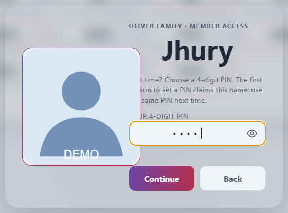
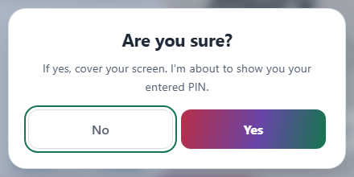
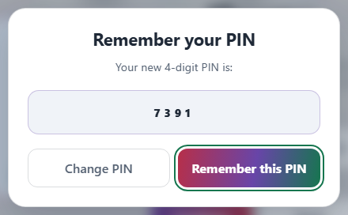
Returning member. Enter the same 4-digit PIN. Tap the eye button if you need to show or hide the numbers. If the PIN is incorrect, check it and try again. If you have forgotten it, contact the family organizer; the website has no PIN-recovery button.
Kung nakagamit ka na. Ilagay ang dati mong 4-digit PIN. Pindutin ang icon ng mata para ipakita o itago ang mga numero. Kung mali ang PIN, tingnan itong mabuti at subukang muli. Kung nakalimutan mo, kontakin ang family organizer; walang PIN-recovery button sa website.
Write your wishlist. The first 3 gift ideas are required. Type one idea in each box. The site allows up to 100 items total; extra items are optional. Tap ＋ Add more for another box. Use the small × beside an extra item to remove that box.
Ilagay ang wishlist. Kailangang maglagay ng unang 3 ideya ng regalo. Isulat ang tig-isang ideya sa bawat kahon. Hanggang 100 item ang pinapayagan; hindi kailangang punan ang mga dagdag. Pindutin ang ＋ Add more para magdagdag ng kahon. Pindutin ang maliit na × sa tabi ng dagdag na item para alisin ito.
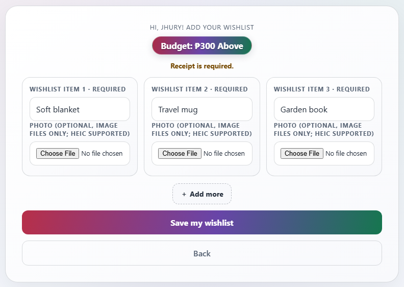
Add an optional photo. Beside an item, choose a photo file (including HEIC from many iPhones). Each file must be 10 MB or smaller, and photos can be attached to up to 6 items. Documents are not accepted. The site may shrink/compress a photo so it can be saved. If it fails, choose a smaller photo or try JPG/PNG. Tap Remove photo to delete an attached photo.
Opsyonal ang litrato. Sa tabi ng item, pumili ng image file (kasama ang HEIC mula sa maraming iPhone). Dapat 10 MB pababa ang bawat file, at hanggang 6 na item lang ang puwedeng lagyan ng litrato. Hindi puwede ang dokumento. Maaaring paliitin o i-compress ng website ang litrato para ma-save. Kung pumalya, sumubok ng mas maliit na litrato o JPG/PNG. Pindutin ang Remove photo para alisin ito.
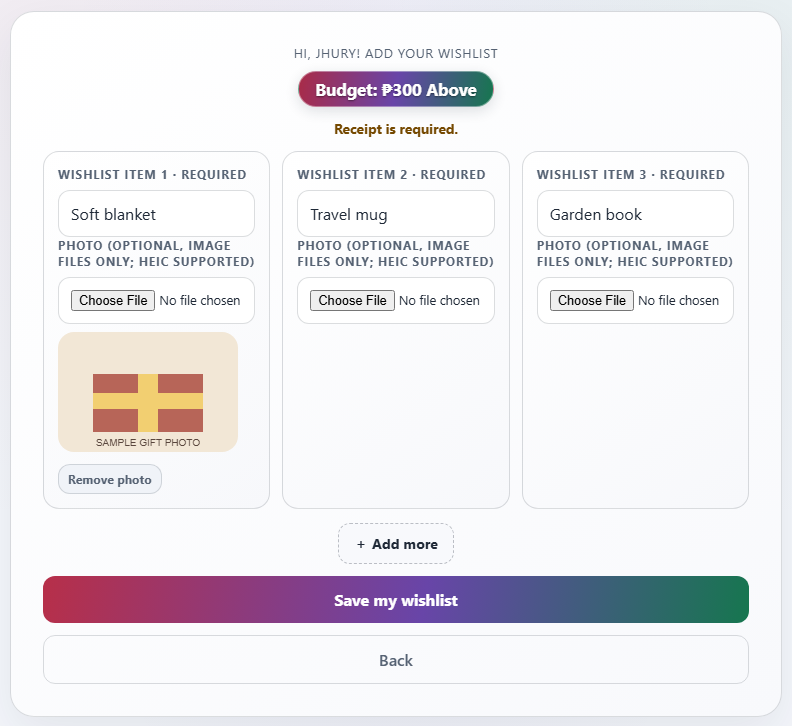
Save your wishlist. The button becomes available when the first 3 boxes have text and any photo is finished processing. Tap Save my wishlist and wait for saving to finish. Your list is shared with the family exchange, but other members cannot open your private wishlist just by checking the status page.
I-save ang wishlist. Magagamit ang button kapag may laman ang unang 3 kahon at tapos nang ihanda ang mga litrato. Pindutin ang Save my wishlist at hintaying matapos. Kasama ang listahan mo sa family exchange, pero hindi ito mabubuksan ng iba sa pagtingin lang sa status page.
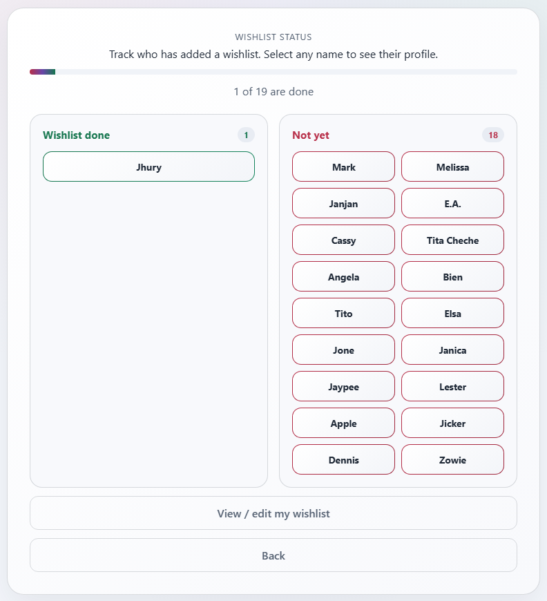
Check progress (optional). On the name screen, tap Wishlist Status. “Done” means that person saved a wishlist; “Not yet” means they have not. Tap a name to see that member's profile photo, not their wishlist. This status updates while the page is open. When all wishlists are saved, it changes to Spin Status.
Tingnan ang progreso (opsyonal). Sa screen ng mga pangalan, pindutin ang Wishlist Status. Ang “Done” ay nakapag-save na ng wishlist; ang “Not yet” ay hindi pa. Pindutin ang pangalan para makita ang profile photo, hindi ang wishlist. Kusang nag-a-update ang status habang bukas ang page. Kapag nakapag-save na ang lahat, magiging Spin Status ito.
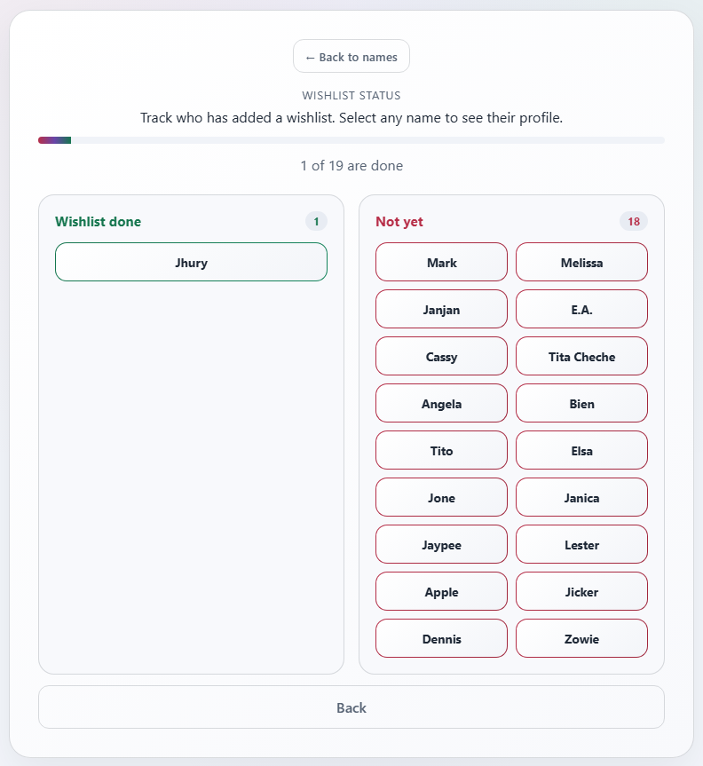
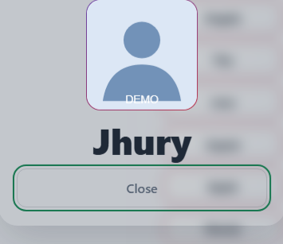
Review your own list. When all family members have saved their wishlists, you will see your own list first. Check it carefully. Tap Edit my wishlist if you need to make changes before spinning. Tap Continue to the wheel when you are ready.
Suriin ang sarili mong listahan. Kapag nakapag-save na ang lahat, unang ipapakita ang sarili mong listahan. Tingnan itong mabuti. Pindutin ang Edit my wishlist kung may babaguhin bago umikot. Pindutin ang Continue to the wheel kapag handa ka na.
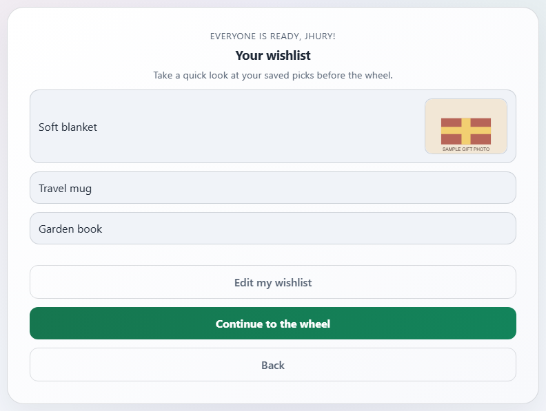
Spin once. Tap SPIN once and wait for the wheel to stop. The system has already saved a fixed recipient for each member: no one gets their own name, and each recipient is assigned to only one giver. The spinning wheel is the reveal; it does not make a new random choice each time. Do not try to spin again.
Isang beses lang mag-spin. Pindutin nang isang beses ang SPIN at hintaying tumigil ang gulong. Nakatakda na sa system ang tatanggap ng bawat miyembro: walang makakakuha ng sarili niyang pangalan, at iisa lang ang magbibigay sa bawat tatanggap. Ipinapakita lang ng pag-ikot ang nakatakdang resulta; hindi ito bagong bunutan sa bawat pindot. Huwag subukang mag-spin ulit.
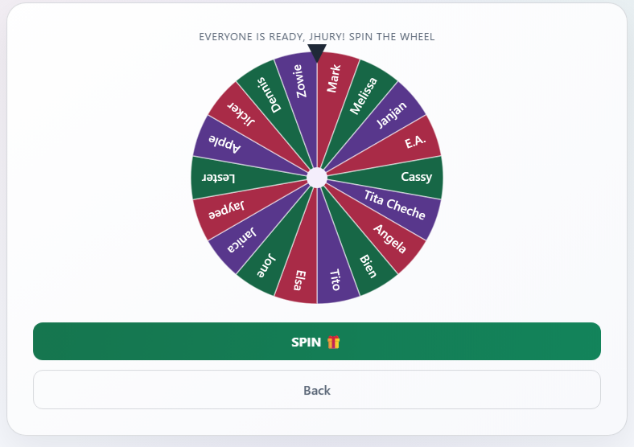
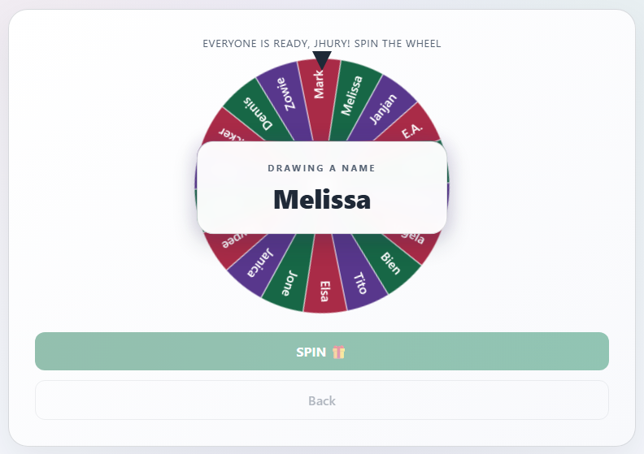
Read your result. The screen shows the person you will give a gift to, their wishlist, and possibly a photo. Tap a wishlist photo to enlarge it. Tap Close, tap outside the photo, press Escape on a keyboard, or use the phone's Back button to close the preview. Keep the recipient and gift a secret until the party.
Tingnan ang resulta. Ipapakita kung kanino ka magbibigay ng regalo, ang wishlist niya, at maaaring may litrato. Pindutin ang litrato para palakihin. Pindutin ang Close, pindutin ang labas ng litrato, pindutin ang Escape sa keyboard, o gamitin ang Back ng cellphone para isara ito. Huwag sabihin kung sino ang tatanggap mo o ang regalo hanggang sa party.
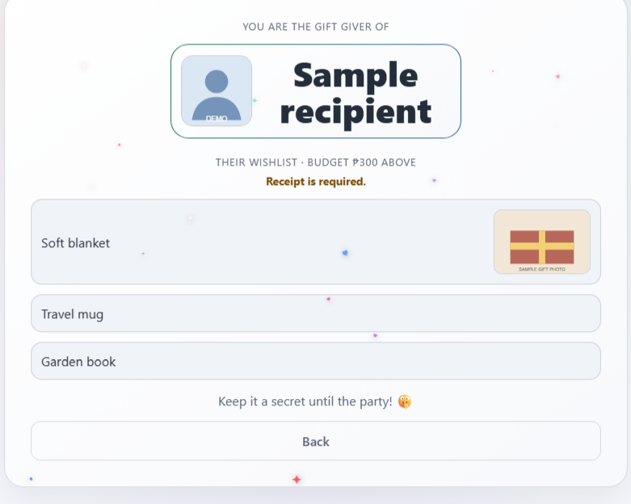
Return later. Choose your own name and enter the same PIN again. If you have already spun, the same saved result will appear; it will not be redrawn. Back returns to the name screen. You can reopen your result, but you cannot change the recipient in the website.
Bumalik sa ibang araw. Piliin ulit ang sarili mong pangalan at ilagay ang parehong PIN. Kung nag-spin ka na, lalabas muli ang parehong resulta; hindi ito bubunutin ulit. Ibinabalik ng Back button sa screen ng mga pangalan. Makikita mo ulit ang resulta, pero hindi mo mapapalitan ang tatanggap sa website.
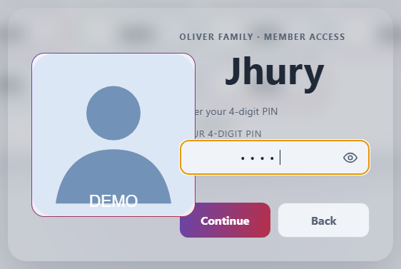
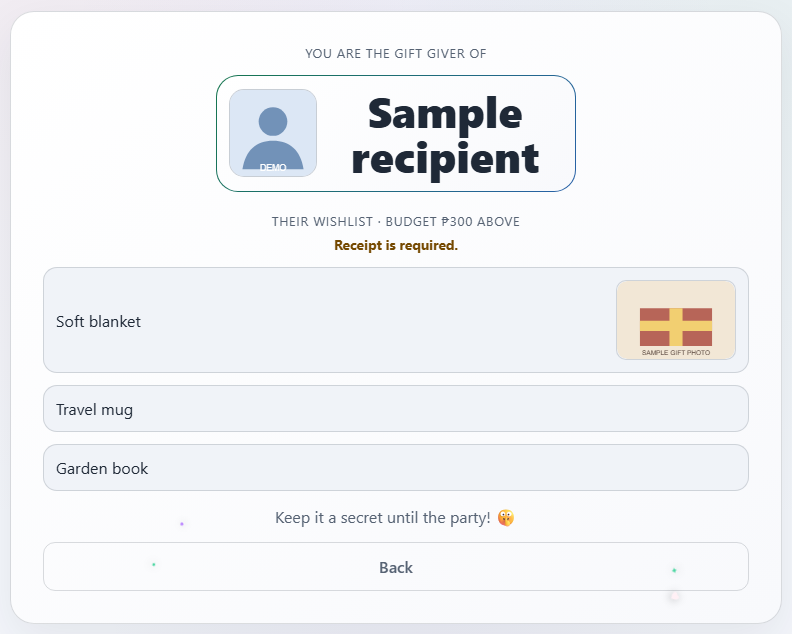
Shows who has saved a wishlist, or who has spun. It does not show anyone else's gift ideas.
Ipinapakita kung sino ang nakapag-save o nakapag-spin na. Hindi nito ipinapakita ang mga gift idea ng iba.
Opens your own wishlist so you can check or edit it before your draw.
Binubuksan ang sarili mong wishlist para tingnan o baguhin bago ang bunutan mo.
Tap a photo in the result to see a larger version. Close it to return to the wishlist.
Pindutin ang litrato sa resulta para makita itong mas malaki. Isara ito para bumalik sa wishlist.
Plan for a gift worth at least ₱300. A receipt is required. There is no receipt-upload button, so keep the purchase receipt and follow the organizer's instructions for giving it. Ask the organizer if you are unsure about the budget or receipt.
Maghanda ng regalong nagkakahalaga ng hindi bababa sa ₱300. Kailangan ang resibo. Walang button para mag-upload nito, kaya itabi ang resibo at sundin ang tagubilin ng organizer kung paano ito ibibigay. Tanungin ang organizer kung hindi sigurado sa halaga o resibo.
Returns to the names so you can start again with your own name and PIN. You can also use your browser or phone Back button to go to a previous step.
Ibinabalik ka sa mga pangalan para makapagsimula ulit gamit ang sarili mong pangalan at PIN. Puwede ring gamitin ang Back ng browser o cellphone para bumalik sa naunang hakbang.
Names, member photos, and completion/spin status can be seen by anyone with the website link. PIN-protected wishlists and results are for the signed-in member. Never share your PIN or show your result to others.
Makikita ng sinumang may website link ang mga pangalan, profile photo, at status. PIN lang ang panangga sa wishlist at resulta. Huwag ibigay ang PIN o ipakita ang resulta sa iba.
The page will not connect: Check the internet and tap Retry. Do not keep pressing Spin if the connection is slow; wait and ask the organizer if the result is unclear.
Hindi makakonekta ang page: Tingnan ang internet at pindutin ang Retry. Huwag pindutin nang paulit-ulit ang Spin kapag mabagal ang koneksyon; maghintay at magtanong sa organizer kung hindi malinaw ang resulta.
Your PIN does not work: Check that you chose your own name and entered the same 4 numbers. Ask the family organizer if you forgot it or the wrong person set it.
Hindi gumagana ang PIN: Tiyaking sarili mong pangalan ang pinili at tama ang 4 na numerong inilagay. Tanungin ang family organizer kung nakalimutan mo ito o ibang tao ang nag-set.
A photo will not upload: Make sure it is an image, under 10 MB, and you have not added photos to more than 6 wishlist items. Try a smaller JPG/PNG photo.
Hindi ma-upload ang litrato: Tiyaking image ito, mas maliit sa 10 MB, at hindi lalampas sa 6 na item na may litrato. Sumubok ng mas maliit na JPG/PNG.
Someone still needs to finish: The wheel opens only after every family member has saved a wishlist. Please wait for them; the website cannot skip anyone.
May hindi pa tapos: Bubukas lang ang gulong kapag nakapag-save na ang bawat miyembro. Hintayin sila; hindi puwedeng laktawan ng website ang sinuman.